Agent-centric-real-to-sim · 归档于 2026-11-05
ConCent
ConCent: Contact-Centric Real-to-Sim-to-Real Learning from One Demonstration
归档到 Agent-centric real-to-sim：从一条真实 demo 建仿真再回到真机，仿真好不好按它复现的接触来判；第二相关 Sim-robot-learning（contact-rich RL、sim-to-real）。论文和 arXiv 页面都没有项目页或代码链接，一次网页搜索也没找到。
TL;DR
- Problem
- 仿真里训的 policy 到真机常败在接触上：40 mm 的块插 42 mm 的孔，碰错一次孔沿，块在手里就歪了，全局物理参数管不到这一下。
- Idea
- 用一条真实 demo 优化物体的 sphere 接触几何，让 replay 复现看到的物体运动；再从 replay 读出接触事件序列 E，当 RL 的目标，取代手写 reward 和物体轨迹跟踪。
- Result
- 真机 shape sorter 插入 80.0%（16/20）；去掉几何优化 20.0%，换手工 reward 50.0%，两者都去 30.0%（Table 1）。只有这一个任务，只有内部消融。
Problem
插入成败取决于一下局部接触，而现有做法调的是全局物理、整个场景或物体轨迹
Running example · 后面每个 stage 都跟着它走
Shape sorter 插入（论文唯一的任务，§4.1）：输入 1 条真实 RGB-D demo（最后一帧编号 #114，Fig. 2）和每个物体 约 100 张 iPhone 照片（App E.1）；红色方块 40 mm，黄蓝盒子上的方孔 42 mm → 想要：只看相机的真机 policy，把块抓起、对准、插进去，不再采真实训练数据。
flowchart TD IN["例子输入
1 条 RGB-D demo
40 mm 块 · 42 mm 孔"]:::example IN --> A1["全局物理匹配
sys-ID · DR
scene twin"] A1 --> AX["接触结构没对上
论文没比较"]:::gap IN --> B1["物体轨迹奖励
X-Sim 等"] B1 --> BX["只管块到哪
不管怎么碰
论文没比较"]:::gap IN --> C1["Unconstrained RL
初始几何
+ 手工 reward"] C1 --> CX["插入阶段失败
30.0% (6/20)"]:::gap IN --> D1["只做一半
只接触奖励
或只优化几何"] D1 --> DX["Wrong Contact
20.0% (4/20)
或 50.0% (10/20)"]:::gap
数字来自 Table 1，都是真机插入成功率。前两条是 §1、§2.2、§2.3 的论证，论文没跑这些方法。Unconstrained RL 只报告了成功率，失败方式论文没单独写。"Wrong Contact"（Fig. 4）是 20.0% 那一行；50.0% 那一行的原因（手工 reward 复现不了 E）是 §4.3 的解释，没有数据支撑。
根本问题：仿真里的接触和真实接触不一致，RL 就会利用不存在的接触。 这篇的切入点：不追全局物理，只把 demo 真正发生接触的地方修对，再把这串接触变成 RL 的目标。
Related work
| 相关工作 | 解决什么 | 怎么解决 | 和本文的区别 |
|---|---|---|---|
| 同一问题 · 别的解法 | |||
| 物体轨迹奖励 X-Sim、Human2Sim2Robot | 用演示的物体运动训仿真 RL | 提取稠密物体 pose，作连续 tracking reward | 只奖励物体到哪 → 本文奖励接触如何发生 |
| 场景级 real-to-sim RialTo、Re3Sim、Digital Cousins | 从真实场景造环境，零样本迁移 | digital twin、photorealistic 渲染或 cousin 资产，再 RL / IL | 追场景级视觉和几何 → 本文只修任务接触处的几何 |
| System ID 与 DR Yu et al.、Tobin et al.、Peng et al. | 缩小或覆盖物理参数差距 | 估计全局参数，或随机化训练 | 接触结构错时不起作用 → 本文不调全局参数 |
| 精密装配 sim-to-real IndustReal | contact-rich 装配迁移到真机 | 手写 SDF 对齐 reward，穿透感知的 policy 更新 | 要 CAD 和预定目标 → 本文从 demo 推出接触锚点 |
| 相似做法 · 别的问题 | |||
| 从演示提取接触 接触模式 [8–11]、Diff-LfD、ContactGaussian-WM | 从演示读出接触结构或碰撞几何 | 接触模式序列；可微物理优化接触点或 Gaussian 碰撞几何 | 用于规划、执行或状态预测，部分绑定可微引擎 → 本文用 ES 配不可微的 MuJoCo，结果进 RL reward |
来源：论文 §1、§2 Related Work（§2.1–§2.3），未另行检索。§2.2 还提到 inverse RL、Eureka（reward 有歧义或缺物理依据），没有单列。
Level 1 · Big picture
先让仿真在 demo 的接触处说得通，再把这串接触当成 policy 必须走过的路
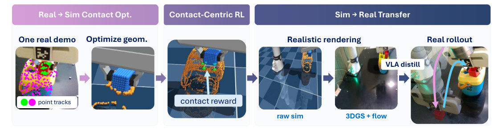
怎么读这张图
- 左 "Real → Sim Contact Opt."："One real demo" 上的绿点（块）和粉点（盒子）是 point tracks；"Optimize geom." 里蓝色球组是块，橙色球组是孔周围。对应 Stage 1–3。
- 中 "Contact-Centric RL"：块悬在盒子上方，箭头 "contact reward" 指向接触对。对应 Stage 4–5。
- 右 "Sim → Real Transfer"："raw sim" → "3DGS + flow" 是渲染，"VLA distill" 是蒸馏，"Real rollout" 是真机。对应 Stage 6。
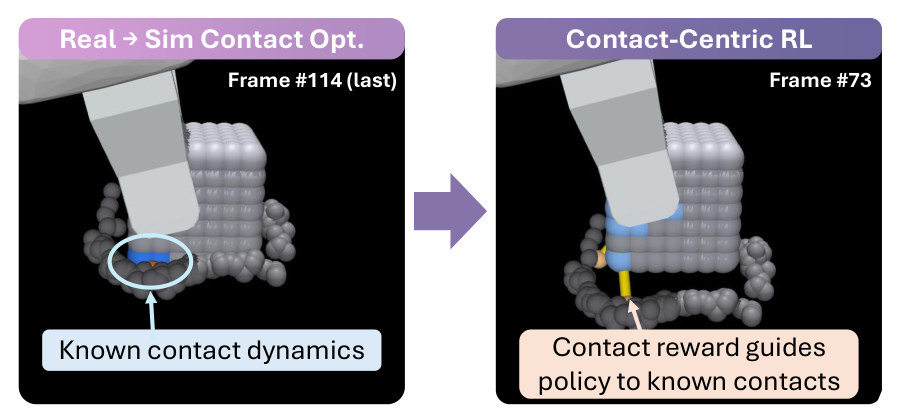
怎么读这张图
- 左 "Frame #114 (last)"：demo replay 的最后一帧，圈出的 "Known contact dynamics" 是块和孔沿真正接触的那些 primitive。
- 右 "Frame #73"：训练时，蓝色 primitive 和一条黄线表示接触对；"Contact reward guides policy to known contacts" 就是把这一对拉到一起。
flowchart LR I["Input
1 条 demo + 照片"]:::example --> M["接触对齐
几何 C* + 序列 E"] M --> O["RL → VLA → 真机
插入 16/20"]
Contact fidelity：论文怎么定义，实际量了什么
论文把 contact-centric fidelity 定义为两件事同时成立，并称它是任务成功的 necessary condition（Abstract、§1）。全文没有一个叫 contact fidelity 的指标，下表是每一半的实际证据。
| 成分 | 论文的定义 | 实际怎么得到 | 和真实比了什么 |
|---|---|---|---|
| Contact event sequence | when, where, how contacts occur | E 的每个 es 是接触中的 robot link 和 primitive ID 集合（§3.1.2）；在仿真 replay 里读出 | 没比。没有力传感、触觉或真实接触标注，也没有报告 rollout 复现 E 的比例 |
| Local contact dynamics | how forces and motions evolve at each contact | 优化几何，让 replay 的物体点云贴近观测（Eq. 1，Chamfer distance） | 只比了运动。块位置误差平均 13.1 → 9.1 mm（§4.3、Fig. 5a）；力没有测 |
| 下游结果 | 任务成功 | 真机 rollout，20 个初始姿态 | 插入 16/20（Table 1），这是全文唯一的真机数字 |
"necessary condition" 是论证，不是实验结论（我的判断）。论文称 E "validated in reality"，这份验证是间接的：几何能复现物体运动，就认为 replay 里的接触可信。
Level 2 · Stages
6 个 stage，外加一条贯穿后半程的 E
flowchart TD IN["Input
demo + 约 100 张/物体"]:::example --> S1 S1["1 · Primitives
3DGS → sphere 组"] --> S2["2 · Geometry opt.
Eq. 1 → C*"]:::win S2 --> S3["3 · Event extraction
S = 3 的序列 E"]:::win S3 --> S4["4 · VCP
512 个里留 78 个"]:::win S4 --> S5["5 · Contact-centric RL
PPO · 148 维观测"]:::win S5 --> S6["6 · Render + VLA
FLOWER 上真机"] S6 --> OUT["Output
真机插入 16/20"] click S1 href "#stage-1" click S2 href "#stage-2" click S3 href "#stage-3" click S4 href "#stage-4" click S5 href "#stage-5" click S6 href "#stage-6"
点击 stage 展开 Level 3 细节。论文的正文顺序是 RL → VCP；这里按数据流把 VCP 放在前面。E 在四处被用到，见 一条 E，四处用。
Level 3 · Details
每个 stage 的细节
Stage 1 Object primitives 每个物体约 100 张照片 → 一组 sphere 碰撞体（初始 contact geometry）
- Why：要有一种仿真能算碰撞、又能局部修改的接触表示（§3.1.1）。
- 采集：iPhone 工具 SplatsCam 拍约 100 张多视角 → COLMAP → 3DGS（App E.1）。
- 采样：3DGS 的 Gaussian 在纹理复杂处过密，所以在 Euclidean 空间用 Farthest Point Sampling 取均匀的点（App E.1、§4.1）。
- 实例化：每个点变成一个 sphere 碰撞体，带 position、mass、friction，直接进接触 solver（§3.1.1）。
- 没写：sphere 半径，mass 和 friction 的取值。
flowchart LR a["照片 → 3DGS
约 100 张/物体"] --> b["FPS 采样
Gaussian 均值"] b --> c["sphere 碰撞体
512 个 surface sphere"]
Running example 在这一步
红块变成蓝色球组，盒子的孔周变成橙色球组（Fig. 1）。§4.4 给的总数是 512 个 surface spheres。同一份 3DGS 在 Stage 6 再用来渲染外观。
Stage 2 Contact geometry optimization 初始 primitive + demo 的动作和点云 → 优化后的几何 C*
- Why：初始几何解释不了真实接触：块贴着孔沿打滑，座不进孔（§4.3）。
- 观测：SAM2 + TAPIR 作用在 RGB-D 上，得到物体点云轨迹（§3.1.1）。
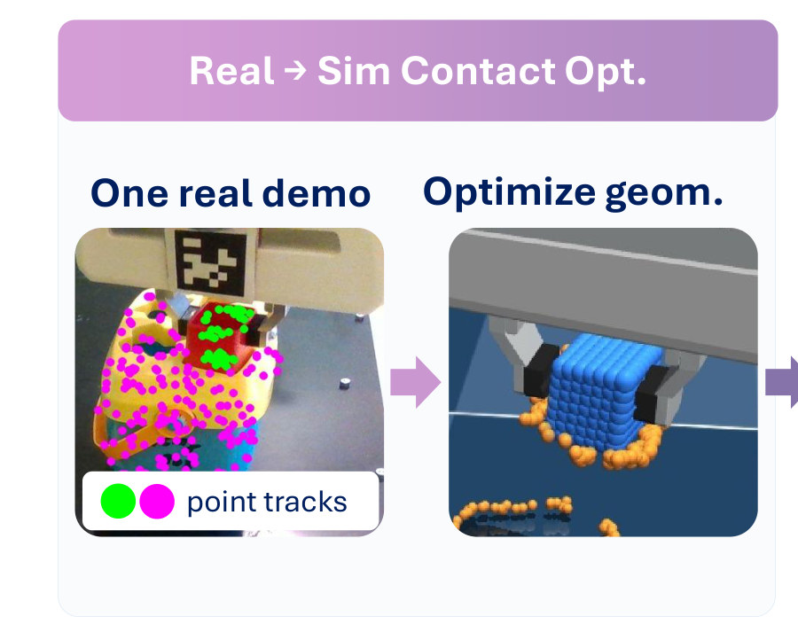
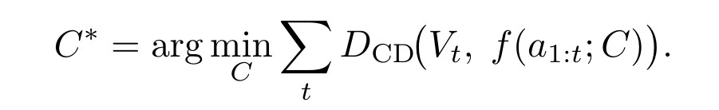
| 符号 | 大白话 | 例子里的值 |
|---|---|---|
| C | 所有接触 primitive：每个球的位置等属性 | 块和盒子的 sphere 组 |
| Vt | t 时刻相机看到的物体点云 | Fig. 1 的绿点和粉点 |
| a1:t | demo 记录的机器人动作，从开始到 t | 这一条 demo 的动作 |
| f(a1:t; C) | 用这组球把动作在仿真里再做一遍，物体点云跑到哪 | 仿真里的块和盒子 |
| DCD | Chamfer distance：两团点云互相找最近点的距离 | 每帧一个值 |
| C* | 让全程距离总和最小的那组球 | 后面所有步骤都用它 |
怎么读这个公式
- 把 demo 的动作在仿真里原样回放（a1:t），不改动作，只改物体的球（C）。
- 每帧比较仿真里的物体和相机看到的物体（DCD），把所有帧加起来，取最小的那组球（C*）。
- 优化器：evolutionary strategy：每代采样一批扰动，在仿真里回放打分（App A）。需要它是因为目标是不可微的 GPU 仿真器（§2.1）。
- Localized deformation mask：只动 replay 里参与过接触的 primitive 和它们的 k 近邻，其余不动，整体形状保持。
- RBF-smoothed perturbation：噪声在形变区中心生成，经 RBF kernel 传开，不是逐球乱抖。
- Elite + EMA：按 chamfer 选最好的几个，用指数滑动平均更新均值位置，再用 RBF 平滑。
- 没写：种群大小、k、迭代次数、耗时。App A 只写了位置更新，mass 和 friction 是否优化论文没说。
flowchart TD m["Deformation mask
接触过的球 + k 近邻"] --> p["RBF 扰动
一批候选几何"] p --> s["回放打分
Eq. 1 的 Chamfer"] s --> u["Elite + EMA
更新均值位置"] u -->|下一代| m u --> o["输出 C*
块能座进孔"]:::win
Running example 在这一步
同一段动作回放：优化前块座不进孔，优化后"exactly as demonstrated"进孔（Fig. 5b），insertion 阶段块位置误差平均 13.1 → 9.1 mm（Fig. 5a，见 E2）。
Stage 3 Contact event sequence extraction C* + demo 动作 → 分阶段的接触事件序列 E
- Why：把"真实发生过哪些接触"变成仿真能确定读出的结构（§3.1）。
- 记录：用 C* 再 replay 一次，逐帧记录 robot link 与 primitive、primitive 与 primitive 的接触，只记时间和 ID（§3.1.2）。
- 分段：每出现一个新接触就是一个阶段边界，那一刻的接触配置就是这个阶段的目标（App B）。
- 多对一：阶段 s 内采样到的任何状态，都按同一个目标给奖励，reward 稳定、好训（App B）。
- 不含：力的大小。"how" 只以接触点、方向的形式出现在 Stage 5 的观测里（我的读法，§3.1.2 没列力）。
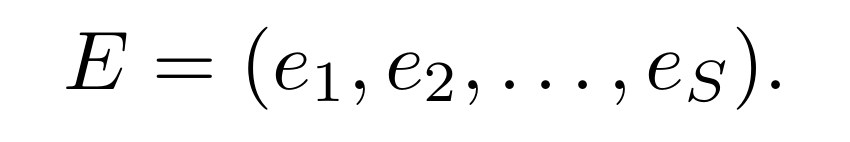
| 符号 | 大白话 | 例子里的值 |
|---|---|---|
| E | 整条 demo 的接触事件序列 | 三个阶段的目标 |
| S | 阶段个数，由接触变化决定 | 3：picking、aligning、inserting（App B） |
| es | 第 s 阶段要达到的接触：哪些 robot link 和 primitive 碰在一起 | 见下面的三个阶段 |
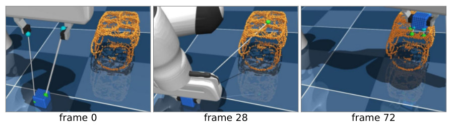
怎么读这张图
- 青色、绿色小球和白线：E 里当前有效的接触对，也就是 reward 要拉到一起的点。
- frame 0：夹爪伸向块，两对线从指尖连到块。
- frame 28：块已夹住，正被运向孔，线从块连到孔。
- frame 72：块对准并插入，接触对都在块和孔之间。帧号跨阶段连续。
Running example 在这一步
三个阶段（App B）：picking 从夹爪碰到块开始；aligning 从块碰到孔周围的盒子开始；inserting 从块碰到孔内壁开始。
Stage 4 Virtual Collision Penalty (VCP) 全部 primitive + E → 少量真实碰撞体 + 其余按距离罚分
- Why：物体拆成球后碰撞体数量暴涨，每步的碰撞检测和接触力计算主宰训练时间（§3.2.2）。
- 留下：只有在 E 里出现过的 primitive 才是物理实体，走完整碰撞。
- 去掉：其余 primitive 完全不进 solver。
- 替代：算它们到目标 mesh 的距离，小于球半径就算碰撞，从 reward 里扣分；不产生接触力。
- 兜底：接近接触的 pair 有 gated margin-band penalty；单对穿透超过阈值，episode 终止并给固定罚分（App C）。
- 代价（我的推断）：被去掉的球在仿真里不挡东西，policy 只能靠罚分学会避开。VCP 对真机成功率的影响没有消融。
flowchart TD a["全部 surface sphere
512 个"] --> b["出现在 E 里
MuJoCo 物理实体
78 个"]:::win a --> c["没出现
不进 solver
按距离罚分"]
Running example 在这一步
512 个 surface sphere 里，demo replay 碰到过的只有 78 个，这 78 个是实体；其余变成 analytic virtual contact penalty（§4.4）。效果见 E4。
Stage 5 Contact-centric policy optimization E + 裁剪后的仿真 → 状态输入的 RL policy πθ
- Why：不模仿 demo 轨迹，而是把接触变成约束，policy 才能适应不同初始状态和扰动（§1）。
- 算法：PPO，实现在 Brax 里；policy 和 value 都是 3 层 MLP（hidden 256，Swish），policy 是 tanh-squashed Gaussian（App C）。
- 动作：at ∈ [−1, 1]8：7-DoF delta-joint + 1 个 gripper 命令。
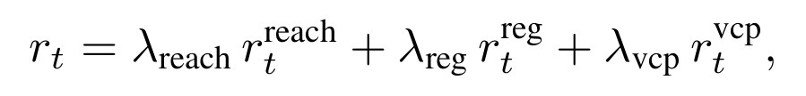
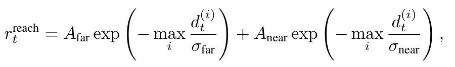
| 符号 | 大白话 | 例子里的值 |
|---|---|---|
| rt | 第 t 步的总奖励 | 三项之和 |
| λreach、λreg、λvcp | 三项各占多大权重 | §3.2.1 说在 App C，App C 没给值 |
| dt(i) | 第 i 对接触此刻还差多远 | 块上一点到孔边一点的距离 |
| maxi | 只看差得最远的那一对 | 不用平均值 |
| σfar、σnear | "多远算远"的长度尺度：大的管远处，小的管贴近时 | 没给值 |
| Afar、Anear | 两项各自的幅度 | 没给值 |
怎么读这两个公式
- Reach（把接触对拉近）：差距越小奖励越大。只看最差的一对（maxi），所以 policy 必须闭合所有 demo 接触，不能只合一部分（§3.2.1）。
- 两个尺度：far 项给远距离的梯度，near 项在贴近时收紧精度。
- Regularization（Eq. 5）：−0.01‖at‖² − 0.001‖q̇t‖²，再加一项罚不必要地推、转物体。
- VCP：Stage 4 的距离罚分。
这个 reward 用的是接触点之间的距离，不是检测到的接触力（我的读法）。
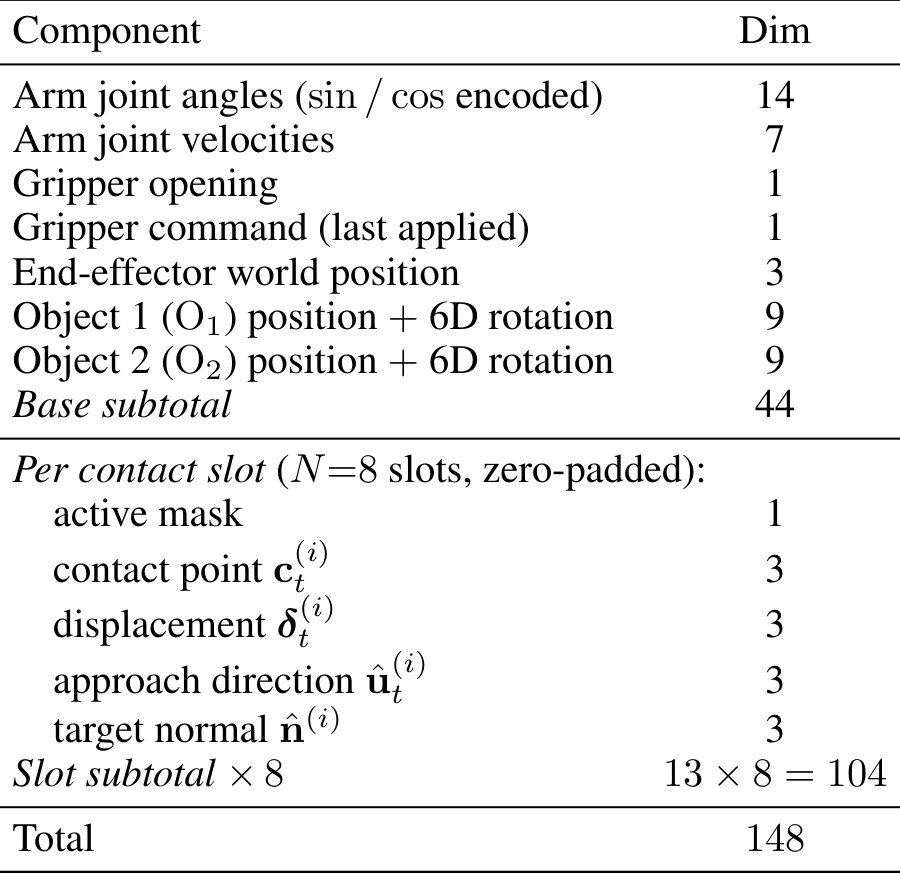
怎么读这张表
- 上半 base（44 维）：关节、夹爪、末端位置，以及 O1（被抓的块）、O2（盒子）的位置和 6D 旋转。全是仿真状态，真机拿不到，这就是 Stage 6 要蒸馏的原因。
- 下半 contact slot（8 × 13 = 104 维）：每个槽是一对 demo 接触：是否有效，接触点，到目标的位移，接近方向，目标表面法向。没用的槽补零。
- Contact-consistent reset（App D，受 OmniReset 启发）：从 demo 里采起始状态，但保持当前接触链：
- 没接触：机器人、块、盒子各自随机重置。
- 机器人碰到块：末端和块一起平移，保持相对位姿，IK 解关节，解不出就丢弃。
- 块也碰到盒子：三者一起平移，同样解 IK。
Running example 在这一步
到了 inserting 阶段，policy 的观测里是块和孔之间的接触对（Fig. 2 右 Frame #73 的黄线），reward 把最差的一对拉近，同时 78 个之外的球只罚分。论文没给训练步数和耗时，也没报告仿真内成功率。
Stage 6 Hybrid rendering + VLA distillation RL 的仿真 rollout → 合成图像数据 → 只看相机的 VLA → 真机
- Why：RL policy 读物体状态，不能直接上真机（§3.2.3）。
- 物体：用 3DGS 渲染，因为物体需要和物理仿真兼容的显式表示。
- 机器人 + 背景：U-Net flow matching，一次生成一帧，条件是当前仿真渲染；能表现阴影、线缆形变这类参数化不了的外观。
- 输入（9 通道）：加噪图、当前关节下的仿真图、上一张真实图（训练用 ground truth，推理用上一张生成图）。wrist 相机另用 FiLM 输入末端位姿（App E.2）。
- 提速：256×256 缩到 64×64 做 flow matching，再用 EDSR 式网络超分回 256×256，约 10× 加速（App E.2）。
- 物体阴影：随机采虚拟光源，把物体影子投到 z = 0 mm 的地面，作为渲染增强（App E.3）。
- 蒸馏：保存 RL rollout，混合渲染后训练 FLOWER，一个轻量 VLA（§3.2.3）。
- "no additional real data"（Fig. 1）：flow 模型训练要真实帧（App E.2），论文没写这些帧的来源和数量；VLA 的数据量也没写。
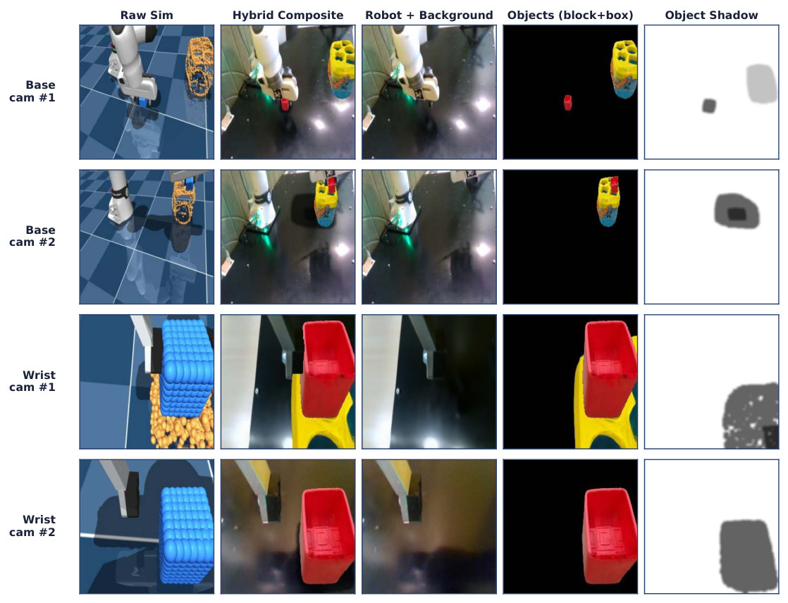
怎么读这张图
- 第 1 列 "Raw Sim"：原始 MuJoCo 渲染，能看到 sphere primitive。
- 第 3–5 列 "Robot + Background" / "Objects (block+box)" / "Object Shadow"：flow matching、3DGS、阴影增强三层。
- 第 2 列 "Hybrid Composite"：三层合成，就是 VLA 看到的训练图。
- 四行：两个 base camera 样例和两个 wrist camera 样例。
flowchart TD a["RL rollout
仿真状态序列"] --> b["3 层渲染
flow + 3DGS + 阴影"] b --> c["训练 FLOWER
图像 → 动作"] c --> d["真机
base + wrist 相机"]:::win
Running example 在这一步
raw sim 里的蓝色球组变成红块、橙色球组变成黄蓝盒子，配上真实桌面和机器人；真机上跑的是 FLOWER，不是 RL policy 本身。
贯穿 一条 E，四处用 Stage 3 的序列同时决定 reward、观测、仿真裁剪和重置
- Why：这是"不用每个任务手写 reward"这一主张的来源：需要的任务信息都从 E 来（§1、App F）。
flowchart TD E["序列 E
picking · aligning · inserting"]:::win E --> R["Reward
Eq. 3–4 的接触对"] E --> O["观测
8 个 contact slot"] E --> V["VCP
512 里留 78"] E --> T["Reset
保持接触链"]
Running example 在这一步
手工 baseline 要人写：孔的位置 plocalhole、目标高度 ztarget、每项的幅度和尺度、成功阈值（App F）。ConCent 把这些换成 E。不过 O1、O2 的角色和 demo 本身仍是输入。
Recap：例子覆盖了论文的哪些 idea
| 论文里的 idea | 例子里在哪体现 |
|---|---|
| Contact-centric fidelity 的两半 | Level 1 的定义表：序列 E，局部动力学 |
| 物体 = primitive 组 | Stage 1：块和孔周变成 sphere，共 512 个 |
| Contact geometry optimization（ES + 局部形变） | Stage 2：块从打滑到座进孔 |
| Contact event sequence | Stage 3：picking / aligning / inserting |
| Virtual Collision Penalty | Stage 4：78 个实体，其余罚分 |
| 最差接触对的 reach reward | Stage 5：所有接触对都要闭合 |
| Contact-consistent reset | Stage 5：块碰到盒子时三者一起平移 |
| 3DGS + flow matching 混合渲染 | Stage 6：球组变成真实外观 |
| VLA 蒸馏 | Stage 6：FLOWER 在真机上跑 |
| 无需每任务手写 reward | 贯穿块：E 替代 App F 的手写项 |
| 主要结果 | E1：16/20 |
Results
两个组件一起才到 80.0%：几何优化是地基，接触奖励离开它没有优势
顺序同论文：E1 真机能否完成插入、每个组件是否必要（Q1）→ E2 几何优化对齐了什么（Q2）→ E3 接触奖励怎么起作用（Q2）→ E4 VCP 能否扩展（Q3）。E1 比成功率，E2 比位置误差，E4 比吞吐；全部是内部消融，没有外部 baseline。
E1ConCent 能在真机上完成精密插入吗，两个组件都必要吗？§4.2 · Q1
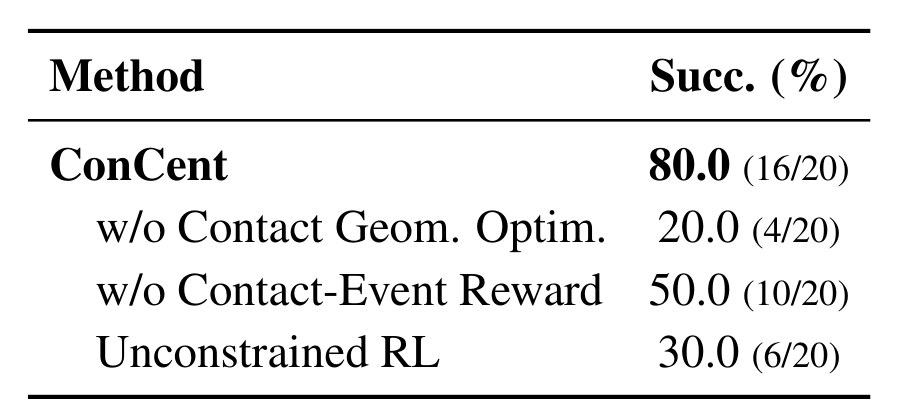
同一张表排成 2×2（我重排的，数字来自 Table 1）
| 手工 reward（App F） | Contact-event reward | |
|---|---|---|
| 初始几何 | 30.0%（6/20）Unconstrained RL | 20.0%（4/20）w/o Contact Geom. Optim. |
| 优化后几何 C* | 50.0%（10/20）w/o Contact-Event Reward | 80.0%（16/20）ConCent |
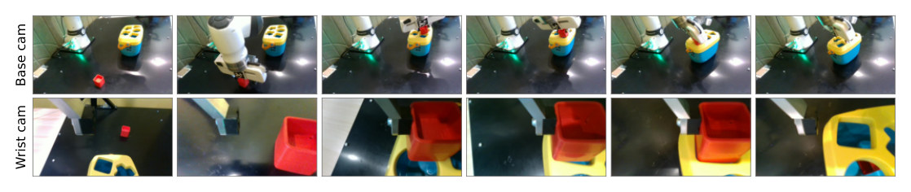
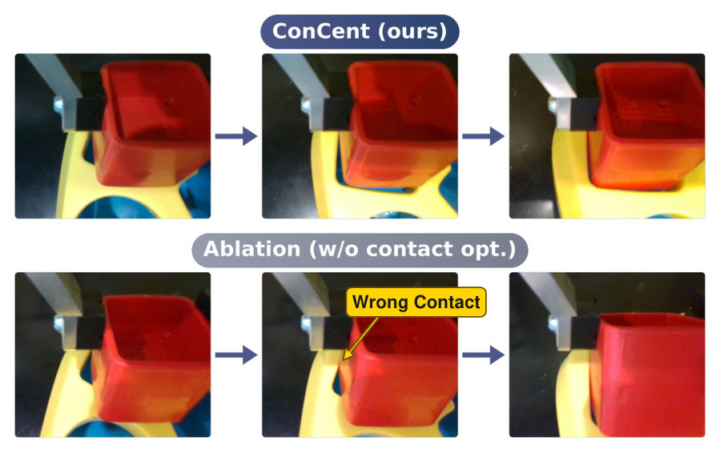
- 说明什么
- 成功率更高。ConCent 80.0%（16/20），各消融 20.0–50.0%。看 2×2：手工 reward 下，优化几何把 30.0% 提到 50.0%；初始几何下，换成接触奖励从 30.0% 变成 20.0%，没有优势；两者都有才到 80.0%。论文的结论是接触奖励"mainly"要配优化后的几何才有效。
- 在故事里
- 全文唯一的真机证据，支撑"接触几何和接触目标缺一不可"。
- 指标
- 20 次 rollout 里插入成功的比例。"成功"的具体判定标准（深度、谁判定）论文没写。论文也称 80.0% 为 end-to-end、cumulative 成功率；前两段是 100.0%，所以数值相同（我的读法）。
- 怎么评测
- 真机，一个任务：40 mm 块、42 mm 孔；base + wrist 相机（Fig. 3）。机器人型号没写，只知道是 7-DoF 臂和平行夹爪。
- 上真机的是蒸馏后的 FLOWER VLA（§3.2.3）。
- 各条件用相同的 20 个初始姿态（块和盒子），"extracted from the dataset"；哪个 dataset、是否在训练分布之外没写。
- baseline 的 picking 和 alignment 都用 ConCent 的，只比 insertion。这隔离了最难的一段，但不是完整的 baseline 系统。各条件的 insertion 怎么接到共用的前两段，论文没写。
- "Unconstrained RL" 不是完全无约束：App F 的 Eq. 6 仍含 rvcp，pipeline 也不变（我的推断：VCP 的 primitive 选择仍来自接触回放）。
- 没有报告置信区间、逐姿态结果和训练 seed 数。
- 我的计算（不是论文数字）：95% Wilson 区间：16/20 为 58.4–91.9%，10/20 为 29.9–70.1%。Fisher 双侧检验：对 10/20 p ≈ 0.096，对 6/20 p ≈ 0.004，对 4/20 p ≈ 0.0004。它忽略了姿态配对（论文没给逐姿态数据）。所以 80 比 20、30 的差距站得住，80 比 50 在 N = 20 下还不够定论。
E2几何优化到底把仿真对齐到什么程度？§4.3 · Q2
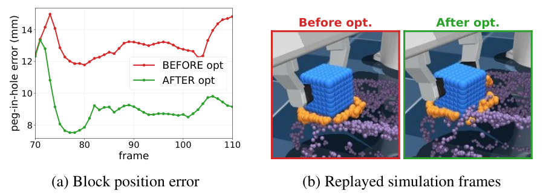
- 说明什么
- 误差更小。insertion 阶段平均块位置误差从 13.1 mm 降到 9.1 mm，块从贴着孔沿打滑变成按 demo 座进孔。
- 在故事里
- 全文唯一量化"局部接触动力学被对齐"的数字。它量的是位置，不是接触或力。
- 指标
- 仿真与真实观测的块位置误差（mm），逐帧画出，文中给平均值。
- 怎么评测
- 同一段记录动作，优化前后各回放一次。
- 只有这一条 demo，也就是优化所用的那条，所以这是拟合误差，不是在新 demo 上的检验（我的判断）。
- 剩余 9.1 mm 比孔的间隙大得多。论文的回应是对齐的是"task-relevant relative contact"，但没给块相对孔的接触误差数字。
E3接触奖励是怎么起作用的？§4.3 · Q2
- 说明什么
- 只有定性解释，没有新数字。论文说 E 就是 reward 强制的东西，手工 reward 复现不了它，policy 才漂到不真实的接触。
- 在故事里
- 解释 Table 1 里 80.0% 和 50.0% 的差距。
- 指标
- 无。论文没有统计各 policy 的 rollout 实际走出的接触序列，所以"漂到不真实的接触"这句话没有直接证据。
- 怎么评测
- 展示 demo 回放的三帧。
E4VCP 能否降低训练成本、扩到大规模并行？§4.4 · Q3
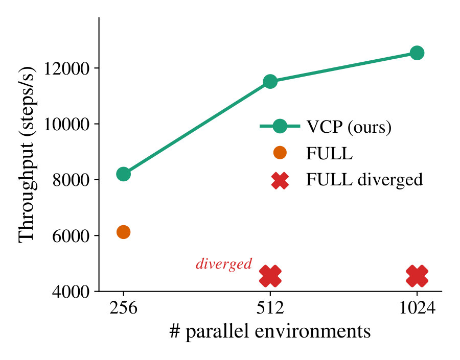
- 说明什么
- 更快也更稳。256 环境下 VCP 约 1.3× 快；FULL 在 ≥512 环境时接触数超过固定 buffer，接触被丢弃，训练发散（3/3 seeds），VCP 在每个规模都稳定。
- 在故事里
- 贡献 2：知道哪些接触要紧，才可能这样裁剪。
- 指标
- 吞吐（steps/s），以及训练是否发散。
- 怎么评测
- 其余不变，只换物体接触模型。
- FULL：512 个 surface sphere 全是 MuJoCo collision geom。VCP：78 个 + analytic 罚分。
- 环境数 256、512、1024。硬件、buffer 大小、是否试过加大 buffer 都没写。
- 只比吞吐和稳定性；两者最终 policy 的质量没比。
Limits
局限和开放问题
论文自己写的（§5）：
- 只评测了平行夹爪的单刚体插入；多步装配、可变形物体、多指手都没验证。
- 接触几何优化和仿真内的物体表示还需要更高效的方法。
- 真机部署靠 VLA 蒸馏，要提前渲染和整理数据，可能成为瓶颈。
我读出来的（推断）：
- 证据和批评有张力：§2.2 批评物体轨迹："the same object motion can result from physically distinct (and differently transferable) contact modes"，而 Stage 2 判断几何对不对，用的也只有物体运动，没有力或触觉。
- 声明大于证据：Abstract 写 "tasks"，§1 写 "generalizes across diverse manipulation tasks"，实验只有一个任务。标题是 One Demonstration，§5 写 "a few demonstrations"。
- 间隙的算术：§4.1 写 "about 2 mm per side"，但 42 − 40 = 2 mm 是总间隙，居中时每边约 1 mm。Fig. 3 和 §5 写的是 2 mm clearance、2 mm tolerance。
- 只测了接触建立：App B 的阶段边界都是"出现新接触"；接触断开的任务（放开、取下）没有涉及。
- 未报告：demo 怎么采、机器人型号、VLA 数据量、训练耗时、各权重、ES 超参数；没有代码。
For Agent-centric real-to-sim
对我们有什么用
- Replay 的接触可以变成校准信号：r2s-lite 的
sim/contacts.json现在用于行为事实和穿透标记，不用来校准几何。ConCent 的 Eq. 1 示范了另一种用法：只调接触处的几何，让 replay 的物体运动贴近点云轨迹。这不解决我们的 mass 和 friction：App A 只写了位置更新。 - 相机要先修：Eq. 1 把观测点云当真值，论文没讨论相机标定，它的残差是 9.1 mm。DROID 约 20 cm 的相机误差会直接进 Vt，所以这条路只能排在 camera fit 之后（我的推断）。
- Sim-to-real 的评测模板和角色问题：固定 20 个初始姿态、共用前段、2×2 消融，是我们将来部署时可抄的协议；但它要每物体约 100 张照片和自己的真机，DROID 录像给不了。按接触变化分阶段可以给物体角色提供证据（"取盖"是接触断开，不是进入 receiver），但论文的 O1、O2 是给定的，也没测接触断开，这只是我们要自己验证的想法。